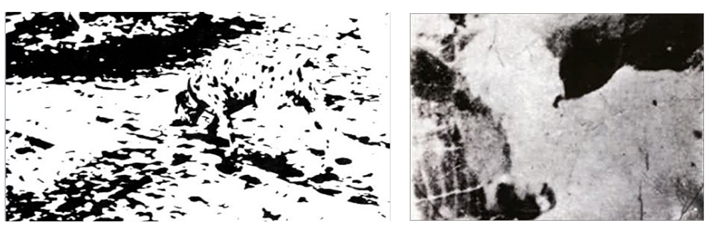
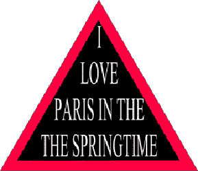
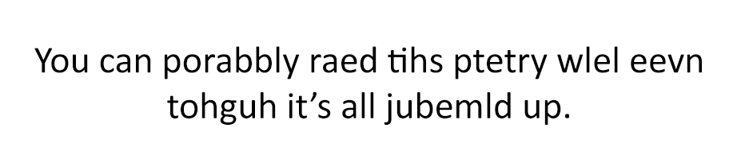
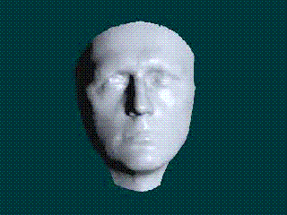

2017년 9월 5일
가끔 나는 지식이라는 것을 마음껏 탐닉하는 환상에 빠지곤 한다. 2500년에서 온 시간 여행자를 만나, 그가 나를 가엽게 여겨 내 모든 질문에 하나하나 답이 적혀 있는 미래의 책 한 권을 건네주는 상상을 하는 것이다. 의식이란 무엇인가? 그건 5장에 있다. 어떻게 무(無)에서 무언가가 생겨났는가? 7장을 보라. 모든 내용은 직관적으로 완벽하게 이해되며, 결점 없는 권위자들에 의해 완전히 입증되어 있다. 천국에 간 모든 이들이 영원의 나머지 시간을 어떻게 보내든 간에, 처음 며칠 동안은 아마 이런 식으로 시간을 보낼 것이라 생각한다.
그리고 가끔씩, 나의 환상은 현실이 된다. 시간 여행이나 신의 개입 덕분이 아니라, 관련 문헌을 챙겨 보는 일에 너무나 처참하게 실패한 덕분이다. 사람들이 어떤 문제를 연구하고 있다는 사실을 내가 깨달았을 때쯤이면, 그 문제는 이미 조사가 끝나고, 실험이 이루어졌으며, 하나의 패러다임으로 정리되고, 검증까지 마친 상태다. 그리고는 내가 한꺼번에 즐길 수 있도록 예쁜 분홍색 리본으로 정성스럽게 포장되어 내 앞에 놓여 있다.
예측 처리(predictive processing) 모델이 바로 그런 잘 포장된 패키지 중 하나다. 내가 모르는 사이, 지난 10여 년 동안 신경과학자들은 뇌가 어떻게 작동하는지에 대한 진정한 '이론'—다윈이나 아인슈타인의 이론처럼 진정으로 통합적인 프레임워크 이론—을 만들어냈는데, 그것은 아름다울 뿐만 아니라 완벽하게 말이 된다.
서핑 언서튼티(Surfing Uncertainty)는 대중 과학서가 아니며, 읽기 쉬운 책도 아니다. 때로는 읽는 것 자체가 가능하긴 한 건가 싶을 정도다. 저자인 앤디 클라크(Andy Clark, 하필이면 논리학과 형이상학 교수라니!)는 분명 천재적이지만, 인지과학 철학의 온갖 난해한 논쟁들에 대해 장황하게 곁가지를 치는 경향이 있다. 특히 그는 모든 것이 항상 얼마나 '체화(embodied)'되어 있는지를 보여주는 데 집착한다. 예측 처리 모델이 체화 이론과 딱히 자연스럽게 맞아떨어지는 것도 아니고, 어떤 면에서는 상당히 체화되어 있지만 다른 면에서는 그렇지 않은 뇌를 묘사하고 있다는 점에서 이런 집착은 다소 어색하게 느껴진다. 만약 "이게 체화된 것처럼 보이지 않을 수도 있지만, 눈을 가늘게 뜨고 자세히 보면 사실 얼마나 엄청나게 체화되어 있는지 알 수 있을 겁니다!"라는 식의 변명으로 가득 찬 백 페이지 분량의 글을 원한다면, 바로 이 책이 제격일 것이다.
예측 처리(predictive processing)에 대해 조금이라도 배우고 싶은 사람에게도 이 책은 필독서다. 내가 알기로 이 주제를 책 한 권 분량으로 다룬 기존의 저작은 이것이 유일하기 때문이다. 또한 이 책은 포괄적이고 학술적이며, 해당 이론과 그 중요성에 대해 훌륭한 입문서를 제공한다. 그러니 주어진 것에 감사하며 내용을 살펴보자.
스타니슬라스 드앤(Stanislas Dehaene)은 우리의 감각에 대해 다음과 같이 쓴다.
우리는 망막이 보는 그대로의 세상을 결코 보지 않는다. 사실, 그것은 꽤 끔찍한 광경일 것이다. 중심부로 갈수록 크게 확대되고 혈관들에 의해 가려진, 심하게 왜곡된 명암 픽셀들의 집합이며, 뇌로 이어지는 케이블이 나가는 '맹점' 위치에는 거대한 구멍이 뚫려 있을 것이다. 게다가 시선이 움직일 때마다 이미지는 끊임없이 흐려지고 변할 것이다. 대신 우리가 보는 것은 망막의 결함이 보정되고, 맹점이 메워졌으며, 눈과 머리의 움직임에 맞춰 안정화된 3차원 장면이다. 여기에 유사한 시각적 장면에 대한 이전의 경험을 바탕으로 한 대대적인 재해석이 더해진다. 이 모든 과정은 무의식적으로 일어나는데, 그중 상당수는 너무나 복잡해서 컴퓨터 모델링으로조차 구현하기 어렵다. 예를 들어, 우리의 시각 시스템은 이미지 속 그림자의 존재를 감지해 이를 제거한다. 뇌는 찰나의 순간에 무의식적으로 광원을 추론하고, 물체의 형태와 불투명도, 반사율, 그리고 휘도를 연역해 낸다.
예측 처리(Predictive processing)는 다음과 같은 질문에서 시작한다. 이것이 어떻게 일어나는가? 도대체 어떤 과정을 거쳐 우리의 이해 불가능한 감각 데이터가 세상에 대한 의미 있는 그림으로 변환되는 것인가?
핵심 통찰은 다음과 같다. 뇌는 다층 구조의 예측 기계라는 점이다. 모든 신경 처리 과정은 두 가지 흐름으로 구성된다. 하나는 감각 데이터의 상향식(bottom-up) 흐름이고, 다른 하나는 예측의 하향식(top-down) 흐름이다. 이 흐름들은 처리 단계마다 서로 맞물려 상호 비교하며, 필요에 따라 스스로를 조정한다.
상향식 스트림(bottom-up stream)은 우리가 처리해야 할, 이해 불가능한 빛과 어둠, 그리고 소음의 덩어리로 시작된다. 이는 우리가 이미 존재를 알고 있었던 인지 계층들을 점진적으로 타고 올라간다. 즉, 그것을 경계선으로 분해하는 경계 검출기(edge-detectors), 그 경계선들을 단단한 물체의 형태로 빚어내는 객체 검출기(object-detectors) 등이 그 예다.
하향식 흐름은 당신이 세상에 대해 알고 있는 모든 것, 즉 최선의 휴리스틱(heuristics), 모든 사전 확률(priors), 그리고 당신에게 일어났던 모든 일에서 시작된다. "고체는 서로를 통과할 수 없다"부터 "e = mc²", 그리고 "파란 제복을 입은 저 남자는 아마 경찰일 것이다"에 이르기까지 모든 것이 포함된다. 이 흐름은 개념에 대한 지식을 이용해 예측을 수행하는데, 이는 언어적 진술의 형태가 아니라 기대되는 감각 데이터의 형태로 이루어진다. 즉, 다음에 무엇을 보고, 듣고, 느끼게 될지에 대해 몇 가지 추측을 한 뒤 "이런 식인가?"라고 묻는 것이다. 이러한 예측들은 인지 계층을 따라 점차 아래로 이동하며 더 낮은 수준의 예측들을 생성한다. 만약 제복 입은 저 남자가 경찰이라면, 그것이 장면 속의 다양한 사물들에 어떤 영향을 줄 것인가? 그 질문에 대한 답이 나왔다면, 그것은 장면 내 경계선(edges)의 분포에 어떤 영향을 줄 것인가? 다시 그 질문에 대한 답이 나왔다면, 그것은 수신되는 가공되지 않은 감각 데이터에 어떤 영향을 줄 것인가?
두 흐름 모두 본질적으로 확률적이다. 상향식(bottom-up) 감각 흐름은 안개, 정전기, 어둠, 그리고 신경 잡음(neural noise)을 처리해야 한다. 즉, 이 신호에서 추출해내려는 형태가 실제일 수도 있고 아닐 수도 있다는 점을 인지하고 있다. 마찬가지로 하향식(top-down) 예측 흐름 또한 미래를 예측하는 것이 본질적으로 어렵다는 점과 자신의 모델이 자주 틀린다는 점을 알고 있다. 따라서 두 흐름 모두 데이터뿐만 아니라 그 데이터의 정밀도에 대한 추정치를 포함한다. 맑은 날 바로 앞에 코끼리가 있다는 상향식 지각은 '매우 높은 정밀도'로 분류될 수 있지만, 멀리 소용돌이치는 안개 속의 모호한 형태는 '매우 낮은 정밀도'로 분류될 수 있다. 물은 젖어 있을 것이라는 하향식 예측은 '매우 높은 정밀도'로 분류될 수 있겠으나, 주식 시장이 상승할 것이라는 예측은 '매우 낮은 정밀도'로 분류될 것이다.
이 두 흐름이 뇌 속에서 나란히 흐르며 서로 끊임없이 상호작용한다. 각 층위는 상위 층위로부터는 예측을, 하위 층위로부터는 감각 데이터를 전달받는다. 그런 다음 각 층위는 베이즈 정리(Bayes’ Theorem)를 이용해 이 두 가지 확률적 근거를 가능한 한 최선으로 통합한다. 이 과정의 결과는 몇 가지 서로 다른 방식으로 나타날 수 있다.
우선, 감각 데이터와 예측이 어느 정도 일치할 수 있다. 이 경우 해당 계층은 "모든 것이 정상"임을 나타내며 침묵을 지키고, 상위 계층은 이에 대해 전혀 알지 못한다. 상위 계층은 그저 이전에 예측하던 바를 계속해서 예측할 뿐이다.
둘째로, 정밀도가 낮은 감각 데이터가 정밀도가 높은 예측과 충돌할 수 있다. 베이즈 수학(Bayesian math)적 관점에서는 예측이 여전히 옳을 가능성이 높고 감각 데이터가 틀렸다고 결론 내릴 것이다. 그러면 하위 수준의 체계는 '장부를 조작'하여, 즉 감각 데이터를 예측된 모습처럼 다시 써서 모든 것이 정상인 것처럼 신호를 보내며 계속 침묵을 지킨다. 상위 수준의 체계는 계속해서 자신의 예측을 고수한다.
셋째, 정밀도가 높은 감각 데이터와 예측 사이에 해결 불가능한 충돌이 발생할 수 있다. 베이지안 수학(Bayesian math)에 따르면 이러한 예측은 아마도 틀렸을 가능성이 높다. 관련 뉴런들이 발화하며 '서프라이절(surprisal)'—놀람을 뜻하는 불필요하게 전문적인 신경과학 용어—을 나타낸다. 불일치의 정도가 심할수록, 그리고 그 불일치를 야기한 데이터의 추정 정밀도가 높을수록, 서프라이절은 더 커지며 상위 단계로 보내는 경보음 또한 더 커진다.
상위 수준의 층위가 하위 수준으로부터 경고 신호를 받을 때, 이것은 상위 층위 입장에서 일종의 상향식 감각 데이터(bottom-up sense-data)와 같다. 그러면 상위 층위는 스스로에게 묻는다. “더 높은 상위 층위에서 이런 일이 일어날 것이라고 예측했는가?” 만약 그렇다면, 그들은 침묵을 지킨다. 그렇지 않다면, 상위 수준의 예측을 하위 수준의 감각 데이터로 매핑하는 자신들의 모델을 수정하려 시도할 것이다. 혹은 불일치를 덮어버리기 위해 직접 장부를 조작(cook the books)하려 할지도 모른다. 이 모든 방법이 통하지 않을 때, 그들은 더 높은 상위 층위로 경고 신호를 보낸다.
모든 층위는 알람 소리를 듣는 것을 정말 싫어한다. 그들의 목표는 '놀람(surprisal)'을 최소화하는 것, 즉 (상위 층위에서 보내온 예측을 전제로) 세상을 너무나 잘 예측하게 되어 그 어떤 것에도 놀라지 않는 상태가 되는 것이다. 놀람은 그 놀라움이 멈출 때까지 모델의 매개변수를 조정하거나 새로운 모델을 배치하는 광분한 활동을 촉발한다.
이 모든 과정이 1초에 수차례씩 일어난다. 하위 계층은 끊임없이 감각 데이터를 상위 계층으로 쏘아 올리고, 상위 계층은 이에 맞춰 가설을 계속 수정하며 다시 하위 계층으로 내려보낸다. 놀라움(surprise)이 감지되면, 관련 계층이 가설을 변경하거나 책임을 상위 계층으로 떠넘긴다. 이렇게 수조 번의 사이클이 반복되고 나면, 모두가 올바른 가설을 갖게 되고 더 이상 그 무엇에도 놀라지 않게 되며, 뇌는 휴식을 취하고 다음 과제로 넘어간다. 책의 내용에 따르면 다음과 같다.
불확실하고 소음이 가득한 세상을 빠르고 능숙하게 다루기 위해, 우리와 같은 뇌는 예측의 달인이 되었다. 사실상 감각적 자극이라는 파도와 소음, 모호함보다 한발 앞서 나가려 함으로써 그 파도를 타는 것이다. 숙련된 서퍼는 파도가 부서지는 지점과 가깝지만 그보다 약간 앞선 위치인 '포켓(in the pocket)' 상태를 유지한다. 그래야 힘을 얻을 수 있고, 파도가 부서질 때 휩쓸리지 않기 때문이다. 뇌의 과업도 이와 비슷하다. 끊임없이 들어오는 감각 신호를 예측하려 시도함으로써, 우리는—곧 자세히 살펴볼 방식대로—주변 세계에 대해 배우고 생각과 행동으로 그 세계와 상호작용할 수 있게 된다.
그 결과로 나타나는 것이 지각이며, 예측 처리(PP) 이론은 이를 "통제된 환각"이라고 설명한다. 당신은 세상을 있는 그대로 보고 있는 것이 아니다. 당신은 세상에 대해 내린 예측이 '기대되는 감각'의 형태로 구현되고, 그것이 실제 감각 데이터에 의해 형성되거나 제약된 모습을 보고 있는 것이다.
말은 이쯤 해두자. 몇 가지 예를 들어보겠다. 대부분 이미 본 적이 있겠지만, 다시 한번 상기해서 나쁠 것은 없다.

이는 뇌가 상향식(bottom-up) 데이터를 이해하기 위해 하향식(top-down) 가설에 얼마나 크게 의존하는지를 보여준다. 대부분의 사람들에게 이 두 사진은 처음에는 빛과 어둠이 뒤섞인 무의미한 얼룩처럼 보일 것이다. 하지만 그것이 무엇인지 알아내고 나면(스포일러), 장면은 명확하고 일관되게 다가온다. 예측 처리(predictive processing) 모델에 따르면, 우리가 항상 모든 것을 인식하는 방식이 바로 이와 같다. 다만 평소에는 장면을 하나로 묶어주는 데 필요한 개념들이 스포일러 링크를 클릭해서 얻어지는 것이 아니라, 우리 뇌의 상위 수준 예측에서 비롯된다는 점이 다를 뿐이다.

이는 하향식 흐름(top-down stream)이 상향식 흐름(bottom-up stream)을 형성하고 더 일관성 있게 만들려는 노력이 때로는 어떻게 '장부를 조작하여' 감각을 완전히 바꾸어 놓을 수 있는지를 보여준다. 실제 화면에는 "PARIS IN THE THE SPRINGTIME"("the"라는 단어가 중복된 점에 주목하라!)이라고 적혀 있다. 하지만 하향식 흐름은 이것이 영어 문법을 따르는 의미 있는 문장이어야 한다고 예측하며, 상향식 흐름의 내용을 자신이 생각하기에 당연히 그랬어야 할 내용으로 대체해 버린다. 이는 매우 강력한 과정이다. 이 단락에서만 내가 당신이 눈치채지 못하게 "the"라는 단어를 몇 번이나 반복해서 썼겠는가?

“통제된 환각으로서의 지각”에 대한 좀 더 모호한 사례다. 여기서는 당신의 경험이 글자들이 뒤섞여 있다는 사실을 완전히 부정하는 것은 아니지만, 그 옆에 자연스럽게 나타나는 더 ‘나은’ 그리고 더 일관된 경험을 겹쳐 보이게 한다.
https://www.youtube.com/embed/Ftdb5EKqjIo?rel=0&controls=0&showinfo=0&start=42
다음은 밤하늘을 비행하는 비행기를 찍은 저화질 영상이다. 잠시 후면 당신은 비행기의 움직임과 특성을 예측하기 시작한다는 점에 주목하라. 그러면 깜빡이는 불빛이나 움직임, 또 다른 불빛, 카메라의 흔들림 같은 것들에 더 이상 놀라지 않게 된다. 사실, 만약 불빛이 깜빡이는 것을 멈춘다면 당신은 오히려 놀랄 것이다. 순진하게 생각하면 밤하늘의 어두운 부분이 계속 어둡게 유지되는 것보다 덜 놀라운 일은 없겠지만 말이다. 이렇게 몇 초가 지나면, 비행기가 (꽤 복잡한) 경로를 따라 계속 이동하는 모습은 그저 "늘 보던 그대로"로 읽힌다. 그러다 카메라가 줌아웃되거나 비행기가 궤적을 약간 바꾸는 등 다른 일이 일어나면, 당신은 온전히 그 지점에만 집중하게 된다. 깜빡이는 불빛과 움직임은 완전히 잊히거나, 적어도 "비행기가 계속 깜빡이며 가고 있음"이라는 정보로 압축되어 처리된다. 그동안 셔츠가 피부에 닿는 느낌 같은 다른 감각들은 완전히 예측되어 의식 밖으로 차단되며, 덕분에 당신은 비행기 움직임의 미세한 변화에만 온전히 집중할 수 있게 된다.
https://www.youtube.com/embed/66tQR7koR_Q
같은 맥락에서 예를 들어보자. 이것은 릭 애슬리(Rick Astley)의 “네버 고잉 투 기브 유 업(Never Going To Give You Up)”을 10시간 동안 계속해서 반복 재생하는 것과 같다(유튜브에는 정말 이상한 것들이 많다). 처음 한 시간 동안은 가끔 노래를 흥얼거릴지도 모른다. 두 시간째가 되면 슬슬 짜증이 나기 시작할 것이다. 그리고 세 시간째가 되면, 노래가 나오고 있다는 사실조차 완전히 잊어버리게 된다.
하지만 어느 한 순간, 대략 6시간쯤 지났을 때, 딱 두 음절인 "never"라는 두 음표를 건너뛰어 릭(Rick)이 "Gonna give you up"이라고 말했다고 가정해 보자. 그 두 음절이 있어야 할 자리에 흐르는 정적이, 마치 누군가 바로 옆에서 폭탄을 터뜨린 것처럼 당혹스럽게 들리지 않겠는가? "Never Gonna Give You Up"이 영원히 계속될 것이라고 예측해 온 당신의 뇌는, 갑작스럽게 기대가 무너진 것을 발견하고 상위 단계로 온갖 경고 신호를 보낸다. 그리고 그 신호들은 결국 당신의 의식에 도달해 "도대체 뭐지?"라는 반응을 이끌어낼 것이다.
좋다. 이제 글을 꽤 많이 읽었고, 사진도 많이 보았으며, "네버 고나 기브 유 업(Never Gonna Give You Up)"을 10시간 동안 들었다. 이제 보상을 받을 시간이다. 이 이론을 사용해 모든 것을 설명해 보자.
PP에서 주의(attention)는 "예측의 신뢰 구간"을 측정한다. 신뢰 구간 내에 있는 감각 데이터는 일치하는 것으로 간주되어 놀람(surprisal)을 기록하지 않는다. 반면 신뢰 구간 밖에 있는 감각 데이터는 일치에 실패하며, 이는 상위 단계로 알림을 보내고 결국 의식에 도달하게 된다.
이는 하향식(top-down) 흐름과 상향식(bottom-up) 흐름 사이의 균형을 조절한다. 주의 집중도가 높다는 것은 지각이 주로 상향식 흐름에 기반한다는 것을 의미한다. 아주 작은 편차조차 오류로 등록되기 때문에, 전체적인 지각 상이 감각에 의해 매우 강력하게 제약받기 때문이다. 반대로 주의 집중도가 낮다는 것은 지각이 주로 하향식 흐름에 기반한다는 뜻이며, 이 경우 당신은 감각 이미지의 모호한 윤곽만을 지각하고 나머지는 당신의 예측으로 채워 넣게 된다.
아래에서 직접 시도해 볼 수 있는 유명한 실험이 하나 있다. 실험에 참여한다면, 다음 단계로 넘어가기 전에 반드시 영상을 끝까지 시청하시라.
https://www.youtube.com/embed/vJG698U2Mvo?rel=0&controls=0&showinfo=0
Please provide the text you would like me to translate. You have provided the guidelines and the context, but the actual paragraph from "Book Review: Surfing Uncertainty" is missing.
Please provide the text you would like me to translate. You have provided the guidelines and the context, but the actual paragraph from "Book Review: Surfing Uncertainty" is missing.
공을 패스하는 선수들을 관찰하라는 지시를 받은 피실험자의 약 절반은 고릴라를 알아차리지 못한다. 공의 움직임에 대한 이들의 시각은 상향식(bottom-up) 흐름에 의해 엄격하게 제한되며, 즉 눈앞에 보이는 것을 그대로 본다. 하지만 고릴라에 대한 이들의 시각은 주로 하향식(top-down) 흐름에 의존한다. 이들의 신뢰 구간은 매우 넓다. 뇌 어딘가에서 어떤 뉴런이 "저거 고릴라 옷을 입은 사람 아니야?"라고 묻는다. 그러면 뉴런은 하향식 흐름에 자문을 구하고, 하향식 흐름은 "이건 농구 경기잖아, 이 멍청아"라고 답한다. 결국 이 변칙적인 지각은 다른 농구 선수와 같은, 말이 되는 무언가로 매끄럽게 다듬어진다.
하지만 "농구 경기 중에 일어나는 이상한 점을 찾아보라"는 지시를 받고 영상을 본다면, 고릴라를 즉시 발견하게 된다. 특이 사항에 대한 당신의 신뢰 구간은 매우 좁아진다. 즉, 뉴런이 고릴라를 포착하는 순간 상위 단계로 경보를 보내고, 상위 단계에서는 새로운 데이터를 설명할 수 있는 적절한 가설("여기에 고릴라 옷을 입은 사람이 있구나")을 빠르게 도출해낸다.
여기에는 시각과 관련된 흥미로운 비유가 있다. 시야의 중심부는 매우 선명하지만, 주변부는 하향식(top-down) 방식으로 채워진다. 예를 들어, 지금 내 주변 시야에 물병이 있다는 막연한 느낌이 드는데, 이는 내가 이미 그 사실을 알고 있기 때문일 뿐이다. 즉, 물병의 선명한 이미지가 보이기보다는 "더 깊게 파고들지만 않는다면 여기에 물병이 있다"라는 식의 정신적 메모에 가깝다. 이러한 현상의 극단적인 사례가 바로 맹점(blind spot)인데, 이곳은 아무런 감각 정보가 들어오지 않음에도 불구하고 예측된 이미지로 완전히 채워진다.
집 한 채를 상상해 보라. 이제 운석 하나가 그 집으로 추락하는 장면을 상상해 보라. 당신의 내면적 정신 시뮬레이션은 아마 꽤 훌륭하게 작동했을 것이다. 당신은 의식하지 않고도 "운석은 일정한 궤적을 따라 계속 이동한다", "충돌은 현실적인 방식으로 일어난다", "충돌로 인해 운석이 산산조각 난다", 그리고 "운석이 농구공처럼 다시 우주로 튀어 오르지 않는다"와 같은 정확한 물리 법칙들을 적용했을 것이다. 이것이 얼마나 놀라운 일인지 생각해 보라.
사실, 당신이 집이라는 것을 상상할 수 있다는 사실 자체가 얼마나 놀라운 일인지 생각해 보라. '집'이라는 이 매우 높은 수준의 개념이 당신의 시각적 상상력 속에서 다양한 특징과 모서리, 색상 등이 모두 갖춰진 꽤 그럴듯한 집의 이미지로 변환된 것이다(만약 그렇지 않다면 여기를 읽어보라). 이것은 거의 기적에 가깝다. 왜 우리 뇌는 겉보기에 아무짝에도 쓸모없어 보이는 이런 재능을 가지고 있는 것일까?
PP는 우리 뇌의 최상위 수준이 감각 데이터의 형태로 예측을 수행한다고 말한다. 뇌는 단순히 "저기 있는 사람이 경찰일 것이라고 예측한다"라고 말하는 것이 아니라, 경찰의 이미지를 생성하고 이를 감각 데이터로 환산한 뒤, 실제 감각 스트림과 충돌시켜 얼마나 잘 들어맞는지 확인한다. 감각 스트림은 상향식 증거에 맞춰 그 이미지를 점진적으로 조정한다. 즉, 경찰이 백인인지 흑인인지, 콧수염이 있는지 매끈하게 면도를 했는지에 따라 조정하는 식이다. 하지만 여기서 상당 부분의 작업은 하향식 스트림이 담당한다. 우리는 하늘에 떠 있는 유성을 보았을 때 우리의 지각을 안내할 바로 그 메커니즘을 사용하여, 유성을 상상할 수 있는 것이다.
이 모든 논리는 꿈의 경우에도 두 배로 적용된다. 만약 "지각이 하향식(top-down) 동인에 의해 유발되고 상향식(bottom-up) 증거에 의해 제약되는 통제된 환각"이라면, 꿈이란 그 하향식 동인들이 아무런 제약 없이(혹은 침실이 너무 추워서 북극을 탐험하는 꿈을 꾸는 경우처럼 상향식 증거에 의해 아주 약하게만 제약된 채) 자기들끼리 노는 상태라고 할 수 있다.
많은 이들이 이보다 더 높은 수준의 경험, 즉 루시드 드림(lucid dreaming), 유체 이탈(astral projection) 등 우리가 사는 세상만큼이나 설득력 있지만 완전히 상상 속에 존재하는 세계들을 경험한다고 주장한다. 예측 처리(predictive processing) 이론은 이러한 증언들에 매우 우호적이다. 예측을 생성하는 생성 모델(generative models)은 성능이 매우 뛰어나서, 우리가 거의 놀라지 않을 정도로 세상을 충분히 잘 시뮬레이션할 수 있다. 또한 이 모델들은 다양한 층위를 통해 우리의 최하위 지각 장치와 연결되어, 예측 내용을 최하위 수준의 감각 신호로 환산해낸다. 우리 머릿속에 일류 수준의 세계 시뮬레이터이자 지각 생성기가 들어 있다는 점을 고려하면, 우리가 가끔 시뮬레이션된 세계 속에 있는 자신을 지각하게 된다 해도 놀라운 일은 아닐 것이다.
재현되지 않는, 억지로 만들어낸 이상한 종류의 프라이밍(priming)을 말하는 것이 아니다. 내가 말하는 것은 매우 확고하게 정립된 것들이다. 예를 들어, 피실험자에게 "의사(DOCTOR)"라는 단어를 짧게 보여주면, 뒤섞이고 흐릿하게 처리된 일련의 글자들을 "간호사(NURSE)"라는 단어로 해독하는 속도가 훨씬 빨라지고 정확해지는 그런 현말이다.
이것이 전형적인 예측 처리(predictive processing) 방식이다. 하향식 흐름(top-down stream)의 역할은 상향식 흐름(bottom-up stream)이 복잡하고 모호한 감각 데이터를 해석하는 것을 돕는 것이다. "의사(DOCTOR)"라는 단어를 듣는 순간, 하향식 흐름은 이미 "좋아, 지금 의료 전문가에 대해 이야기하고 있군"이라고 생각한다. 이 생각은 의료 관련 사항들에 대한 사전 확률(prior)이 되어 모든 하위 단계로 스며든다. 감각 기관이 의료 관련 방식으로 연관될 수 있는 데이터를 수신하면, 높은 사전 확률 덕분에 해당 가능성의 정밀도가 높아지며, 결국 그것이 즉각적으로 압도적인 유력 가설이 된다.
'비지도 학습(unsupervised learning)'이 어떻게 가능한가에 대한 철학적 논쟁이 있다. 내가 아주 잘 아는 분야는 아니라서 혹시 틀렸다면 미안하지만, 대략 이런 식이다. 지도 강화 학습(supervised reinforcement learning)은 에이전트가 이것저것 시도해 보면 누군가가 그것이 맞았는지 틀렸는지를 알려주는 방식이다. 반면 비지도 학습은 곁에서 알려줄 사람이 아무도 없는 상태에서 이루어지며, 이는 인간이 항상 하고 있는 방식이기도 하다.
PP는 설득력 있는 설명을 제시한다. 우리는 감각 데이터를 생성하는 모델을 만들고, 생성된 감각 데이터가 관찰 결과와 일치할 때 그 모델을 유지한다는 것이다. 감각 데이터를 잘 예측하는 모델은 살아남고, 정확하게 예측하지 못하는 모델은 폐기된다. 하위 계층들이 감각 스트림의 우연적인 특징들을 조정하여 제거하기 때문에, 특정 모델에는 그것이 옳은지 그른지를 판단하는 데 꼭 필요한 감각 데이터만이 남게 된다.
예측 처리(PP, Predictive Processing)가 정확히 백지설(blank slatist)인 것은 아니지만, 거의 완전히 백지에 가까운 상태와도 양립 가능하다. 클라크(Clark)는 '하이퍼프라이어(hyperpriors)'—우리가 세상의 그 무엇이라도 이해하기 위해 아마도 필요할 극도로 기초적인 가정들—에 대해 논한다. 예를 들어, 하나의 하이퍼프라이어는 감각적 동기성(sensory synchronicity)이다. 이는 우리의 다섯 가지 서로 다른 감각이 동일한 세상을 묘사하고 있으며, 우리가 보는 스테레오가 우리가 듣는 음악의 근원일 수 있다는 생각이다. 또 다른 하이퍼프라이어는 대상 영속성(object permanence)으로, 세상이 감각 영역 안에 있든 없든 계속 유지되는 특정한 대상들로 나뉘어 있다는 생각이다. 클라크는 일부 하이퍼프라이어가 선천적일 수도 있다고 말하지만, 반드시 그럴 필요는 없다고 덧붙인다. PP는 필요하다면 스스로 이를 학습할 수 있을 만큼 강력하기 때문이다. 예를 들어, 스테레오가 망치로 부서지는 동시에 음악이 갑자기 멈추는 사례를 충분히 경험하고 나면, 뇌는 시각적 증거와 청각적 증거를 연결하는 것이 감각 흐름을 예측하는 데 도움이 되는 유용한 편법(hack)이라는 점을 추론할 수 있다.
여기서 나는 선천적 시각장애인이 오직 촉각만으로 세상을 파악한다는 사고실험인 몰리뉴의 문제(Molyneux’s Problem)를 떠올리지 않을 수 없다. 만약 이 사람이 갑자기 시력을 되찾는다면, 정육면체의 시각적 모습과 그동안 촉각을 통해 형성해 온 '정육면체'라는 개념을 자연스럽게 연결 지을 수 있을까? 2003년, 일부 연구자들이 최첨단 시각장애 치료법을 이용해 이를 실제로 테스트해 보았다. 결과는 '아니오'였다. 그들에게 그 연결 고리는 직관적으로 명백하지 않았다. 학습된 하이퍼프라이어(hyperprior)의 승리다.
하지만 학습은 이러한 매우 기초적인 하이퍼프라이어(hyperprior, 초사전 확률)부터, 프랑스의 수도가 어디인지와 같은 일반적인 학습에 이르기까지 광범위하게 일어난다. 후자의 경우, 최소한 지리 단어장의 뒷면에 무엇이 적혀 있을지 예측하는 데 도움이 되며, 고차원적 시스템이 세상을 이해하고 사건을 예측하는 데 유용한 개념으로서 이를 계속 유지할 수도 있을 것이다.
서핑 언서튼티(Surfing Uncertainty)의 약 3분의 1은 운동 체계(motor system)에 할애되어 있다. 개인적으로는 그리 흥미롭지 않게 느껴졌고, 여기서 제대로 다룰 시간적 여유도 없다(특히 흥미로운 지점 하나에 대해서는 나중에 따로 포스트를 올릴지도 모르겠다). 하지만 이 부분은 지금까지 어느 정도 무시되어 온 경향이 있다. 만약 뇌의 주된 역할이 그저 예측을 하는 것이라면, 운동 체계는 정확히 무엇을 하고 있는 것일까?
여기서 일일이 설명할 시간은 없지만, 매우 훌륭한 일련의 실험들을 바탕으로 클라크(Clark)는 다음과 같은 결론을 내린다. 바로 행동을 예측하는 것이 행동을 일으키는 원인이 된다는 것이다.
이 부분은 거의 웃음이 나올 정도다. 뇌는 예측 오류(prediction error)를 정말 싫어하며, 이를 최소화하기 위해 최선을 다한다는 점을 기억하자. 시각과 같은 예측이 빗나갔을 때는 모델을 수정하고 다음번에 더 잘 예측하려고 노력하는 것 외에 할 수 있는 일이 별로 없다. 하지만 고유 수용성 감각 데이터(proprioceptive sense data, 즉 관절의 위치에 대한 감각)에 대한 예측이 틀렸을 때는 예측 오류를 해결하는 아주 쉬운 방법이 있다. 바로 관절을 움직여 예측과 일치시키는 것이다. 따라서 (내 주장이긴 하지만, 이에 대한 과학적 근거는 이 책의 4장과 5장을 참고하라) 팔을 들어 올리고 싶다면, 뇌는 팔이 들어 올려졌다고 매우 강력하게 예측하고, 그 뒤는 예측 오류를 최소화하려는 하위 단계의 동력이 알아서 처리하게 만든다.
이 모델에 따르면, 움직임에 대한 '예측'은 단순히 움직임이 일어날지도 모른다는 막연한 생각이 아니라, 실제 운동 프로그램 그 자체다. 이는 관절의 감각, 고유 수용성 감각, 다양한 근육의 정확한 긴장도 등 모든 다양한 층위에서 풀려나며, 최종적으로 하나의 특정한 유연한 움직임으로 이어진다.
프리스턴(Friston)과 동료들은 정밀한 고유수용성 감각 예측이 운동 동작을 직접적으로 유도한다고 제안한다. 이는 운동 명령이 고유수용성 예측으로 대체되었음을(혹은 내 표현을 빌리자면, 고유수용성 예측에 의해 구현되었음을) 의미한다. 능동적 추론(active inference)에 따르면, 에이전트는 뇌가 기대하는 감각적 결과를 능동적으로 탐색하는 방식으로 신체와 센서를 움직인다. 만약 이 통합적 관점이 옳다면, 지각, 인지, 행동은 자극 배열을 선택적으로 샘플링하고 능동적으로 조형함으로써 감각 예측 오류를 최소화하기 위해 함께 작동한다. 이렇게 되면 지각과 행동 제어 사이의 근본적인 계산적 경계는 사라진다. 남는 것은 [오직] '적합성의 방향(direction of fit)'이라는 명백한 차이뿐이다. 여기서 지각은 신경 가설을 감각 입력에 맞추는 과정인 반면, 행동은 전개되는 고유수용성 입력을 신경 예측에 맞추는 과정이다. 앤스콤(Anscombe)이 유명하게 언급했듯, 이 차이는 쇼핑 목록을 확인하여 목록이 장바구니의 내용물을 결정하게 하는 것과, 실제로 구매한 품목들을 적어 내려가 장바구니의 내용물이 목록을 결정하게 하는 것의 차이와 비슷하다. 하지만 이러한 적합성 방향의 차이에도 불구하고, 그 밑바탕에 깔린 신경 계산의 형태는 이제 동일한 것으로 드러난다.
PP 모델의 한 가지 결과는 유기체가 자신의 행동으로 인한 영향을 끊임없이 보정해낸다는 점이다. 예를 들어, 시야를 가로질러 쫓고 있는 영양의 움직임을 예측하려 한다면, 자신이 달릴 때 발생하는 상하 움직임을 보정해야 한다. 따라서 신체가 꽤 이른 시기에 학습하는 어느 '하이퍼프라이어(hyperprior, 상위 사전 확률)' 중 하나는, 스스로 어떤 움직임을 만들었다면 그 움직임으로 인한 결과가 느껴질 것이라고 예상해야 한다는 점일 것이다.
'힘 일치 과제(force-matching task)'라고 불리는 매우 흥미로운 착각이 있다. 연구자가 피실험자에게 어느 정도의 힘을 가한 뒤, 피실험자에게 다른 대상에 대해 정확히 그만큼의 힘을 가해달라고 요청하는 실험이다. 피실험자가 가하는 힘은 보통 상향 편향되는 경향이 있다. 즉, 원래 가해야 할 것보다 더 많은 힘을 쓰는 것이다. 아마도 뇌의 예측 엔진이 자신의 힘을 '상쇄'하고 있기 때문일 것이다. 클라크(Clark)는 여기서 한 가지 흥미로운 함의를 설명한다.
동일한 두 가지 메커니즘(순방향 모델 기반 예측과 그 결과로 나타나는, 잘 예측된 감각의 감쇄)은 '힘의 에스컬레이션(force escalation)'이라는 당혹스러운 현상을 설명하는 데에도 동원되어 왔다. 힘의 에스컬레이션에서는 물리적 충돌(놀이터에서의 싸움이 가장 흔한 예시다)이 일종의 계단식 효과를 통해 상호 간에 증폭되는데, 이는 각자가 상대방이 자신을 더 세게 때렸다고 믿기 때문에 발생한다. 셔길(Shergill) 등은 실험을 통해 이러한 경우 각자가 자신의 감각을 정직하게 보고하고 있지만, 그 감각들이 자기 예측의 감쇄 효과로 인해 왜곡되었다는 점을 시사한다. 따라서 '자기 자신이 생성한 힘은 동일한 크기의 외부 생성 힘보다 더 약하게 인식된다.'
이는 왜 스스로를 간지럽힐 수 없는지도 설명해 준다. 신체는 자신의 행동을 예측하고 그에 맞춰 조정함으로써, 그 자극을 약화된 형태로만 남겨두기 때문이다.
척수에서 일어나는 ‘통증 게이팅(pain gating)’에 대해 많은 이야기를 듣게 되지만, 예측 부호화(PP) 모델은 이것이 무엇인지 아주 잘 설명해 준다. 즉, 하향식 사전 확률(top-down priors)에 기반해 통증을 조정하는 것이다. 만약 당신이 통증을 느껴야 한다고 믿는다면, 뇌는 그 믿음을 필터 삼아 모호하고 정밀도가 낮은 통증 신호를 해석할 것이다. 반대로 통증을 느끼지 않아야 한다고 믿는다면, 뇌는 그러한 모호하고 정밀도가 낮은 통증 신호를 오류라고 가정할 가능성이 더 커진다. 따라서 의사가 통증을 치료해 줄 것이라고 확신시킨 알약을 복용한다면, 뇌의 하위 계층은 통증 신호를 노이즈로 해석하여 ‘장부를 조작’함으로써 그 신호가 의식에 도달하는 것을 차단할 가능성이 높아진다.
심신증적 통증(Psychosomatic pain)은 이와 정반대의 경우이다. 더 자세한 설명은 책의 7.10절을 참조하라.
좀 더 추측에 가까운 이야기이며, 책에 나온 내용은 아니다. 하지만 이 실험을 기억하는가? 한 심리학자가 피실험자들에게 어떤 선들이 서로 길이가 같은지 물었다. 선들의 길이는 모두 어느 정도 비슷했지만, 대부분의 피실험자는 정답을 맞힐 수 있었다. 그다음 그는 피실험자들을 공모자들과 함께 한 그룹에 넣었다. 모든 공모자는 똑같은 오답을 말했다. 피실험자의 차례가 되었을 때, 대개 그들은 자신의 눈을 믿지 못하고 공모자들과 똑같은 오답을 내놓았다.
상향식 스트림(bottom-up stream)은 특정 방향을 가리키는 모호하고 정밀도가 낮은 상향식 증거들을 제공했다. 하지만 최종적인 베이지안 계산(Bayesian computation) 과정에서, 이 증거들은 다른 방향일 것이라는 강력한 하향식 예측에 의해 완전히 휩쓸려 버렸다. 결국 중간 계층들이 "장부를 조작하여" 실제 느껴진 감각을 예측된 감각으로 대체한 것이다. 위키피디아(Wikipedia)의 설명은 다음과 같다.
최소 50%의 시행에서 다수의 의견에 동조한 참가자들은 애쉬(Asch)가 말하는 이른바 "지각의 왜곡" 반응을 보였다고 보고했다. 뚜렷한 소수(단 12명의 피험자)에 불과했던 이 참가자들은 공모자들의 답변이 옳다고 믿었으며, 다수가 오답을 말하고 있다는 사실을 전혀 인지하지 못한 것으로 보였다.
PP는 정신약리학의 성배, 즉 서로 다른 신경전달물질들이 인간이 이해할 수 있는 수준에서 실제로 무엇을 의미하는지에 대한 설명으로 나아가는 길을 제시한다. "도파민은 보상을, 세로토닌은 평온함을 나타낸다"와 같은 이전의 시도들은 너무나 터무니없이 불충분했기에, 요즘에는 이 질문 자체를 제기하는 것이 일종의 품격 떨어지는 일처럼 보일 정도다.
하지만 예측 부호화(Predictive Processing, PP)에 따르면, NMDA 글루타메이트 시스템은 주로 하향식 흐름을, AMPA 글루타메이트 시스템은 주로 상향식 흐름을 담당하며, 도파민은 주로 정밀도, 신뢰 구간, 그리고 놀람 수준(surprisal levels)과 관련된 무언가를 전달한다. 이는 상당히 일관된 방식으로 많은 관찰 데이터와 일치한다. 예를 들어, 파킨슨병(Parkinson’s disease)의 느리고 망설이는 움직임을 '낮은 운동 신뢰도' 상태로 생각하는 데는 그리 많은 상상력이 필요하지 않다.
PP(PP) 전통의 다양한 연구들은 자폐증을 하향식(top-down) 정보보다는 상향식(bottom-up) 정보에 비정상적으로 높게 의존하는 상태로 보는 관점으로 수렴해 왔다. 이는 "약한 중앙 응집성(weak central coherence)"으로 이어지며, 감각 데이터가 병적으로 좁은 신뢰 구간 내에 들어오지 못함에 따라 지속적인 놀람(surprisal)을 유발한다.
자폐 스펙트럼 장애가 있는 사람들은 전형적으로 옷에 붙은 태그를 견디지 못한다. 태그가 너무 까끌거리고 성가시다고 느끼기 때문이다. 제3부에서 나왔던 예시를 기억하는가? 당신은 등에 닿는 셔츠의 느낌을 성공적으로 '예측하여 제거'함으로써, 더 중요한 일에 집중하려 할 때 셔츠의 존재를 전혀 의식하지 않고 넘어갈 수 있었다. 하지만 자폐인들은 이를 잘 해내지 못한다. 그들의 뇌에도 "셔츠의 느낌이 계속될 것"이라고 예측하는 층이 있긴 하지만, 그 예측이 너무나 정밀한 것이 문제다. 즉, 다음 순간에도 셔츠가 정확히 지금과 동일한 감각 패턴을 만들어낼 것이라고 예측한다. 그러나 실제로 몸을 움직이거나 바람이 스칠 때면 셔츠의 느낌은 아주 미세하게 변하기 마련이며, 바로 그 지점에서 자폐인의 뇌는 의식 수준까지 경보를 보내고, 그들은 이를 "셔츠가 짜증 난다"라고 인식하게 된다.
혹은 자폐인들이 전형적으로 보이는 루틴에 대한 집착과, 그 루틴이 깨지는 순간 느끼는 비참함을 생각해보라. 이들의 뇌는 매우 정밀한 예측만을 수행할 수 있기 때문에, 루틴에 생긴 아주 작은 균열조차 강력한 놀람(surprisal)이자 심각한 예측 실패로 인식된다. 즉, "이런, 내 모든 모델이 실패했어. 이제 진실인 것은 아무것도 없고, 어떤 일이라도 일어날 수 있어!"라고 느끼는 것이다. 이를 같은 상황에 놓인 신경전형인(neurotypical)과 비교해보자. 신경전형인은 그저 신뢰 구간을 약간 넓히며 "뭐, 기본적으로 평소랑 99%는 똑같네, 상관없어"라고 말할 것이다. 이들에게 자폐인과 같은 수준의 놀람과 예측 불가능성을 느끼게 하려면, 탐험되지 않은 대륙에 내던져지는 것과 같이 정말로 예측 불가능한 사건이 일어나야만 할 것이다.
이 모델은 자폐 스펙트럼 장애를 가진 사람들의 강점 또한 예측한다. 우리는 자폐증의 다유전자 위험 점수가 IQ와 양의 상관관계가 있다는 사실을 알고 있다. 만약 자폐증의 핵심 특징이 일종의 향상된 정신적 정밀함이라면, 이는 충분히 납득 가능한 결과다. 또한 이는 왜 자폐 성향의 사람들이 수학이나 컴퓨터 프로그래밍처럼 높은 정밀도를 요구하는 분야에서 두각을 나타내는 것처럼 보이는지도 설명해 준다.
여러 연구 결과가 수렴하며 가리키는 바에 따르면, 이 현상 역시 약한 사전 확률(weak priors)과 관련이 있는 것으로 보인다. 다만 이는 자폐증과는 다른 수준에서 작용하며, 다양한 보상 기제들이 작동한 이후의 결과 또한 다르게 나타나는 듯하다. 특히 흥미로운 한 연구에서는 신경전형인(neurotypicals)과 조현병 환자들에게 움직이는 빛을 따라가게 했는데, 이는 앞서 3부에서 언급한 비행기 영상과 매우 유사한 방식이었다. 빛이 예측 가능한 패턴으로 움직일 때 신경전형인들은 이를 훨씬 더 잘 추적했다. 반면, 기대를 저버리도록 의도적으로 설계된 엉뚱한 영상의 경우, 오히려 조현병 환자들이 더 나은 성과를 보였다. 이는 신경전형인들이 빛이 어디로 이동할지에 대한 정확한 하향식(top-down) 사전 확률의 안내를 받았음을 시사한다. 조현병 환자들은 사전 확률이 매우 약했기에 딱히 제대로 된 안내를 받지는 못했지만, 그렇기에 빛이 예측 불가능하게 움직였을 때도 실수를 하지 않았던 것이다. 또한 조현병 환자들은 '속 빈 가면(hollow mask)'(아래 참조)이나, 하향식 예측이 상향식(bottom-up) 증거를 잘못 제약하는 다른 착시 현상들에 잘 속지 않는 것으로 유명하다. 내 추측으로는, 그들이라면 위의 "PARIS IN THE THE SPRINGTIME" 이미지에서 두 개의 'THE'를 모두 발견할 가능성이 더 높을 것이다.

이런 식의 메커니즘이 조현병으로 이어지는 정확한 경로는 매우 복잡하므로, 관심 있는 분들은 책의 섹션 2.12와 7장 전체를 확인하시기 바란다. 하지만 기본적인 이야기는 이러하다. 이 과정이 비정상적인 예측 오류(prediction error)와 놀람(surprisal)의 파동을 만들어내고, 이는 이른바 '의미 망상(delusions of significance)'으로 이어진다는 것이다. 예를 들어 조현병 환자는 누군가 모자를 쓰고 있다는 사실이 어떤 엄청나게 중요한 우주적 메시지라고 믿게 된다. 조현병 환자의 뇌는 이 모든 예측 오류를 설명하고 놀람을 줄일 수 있는 가설을 세우려 노력하지만, 예측 오류 자체가 무작위적이기 때문에 이는 불가능하다. 그 결과 믿기 힘들 정도로 기괴한 가설들이 도출되며, 결국 조현병 환자의 뇌는 상향식(bottom-up) 정보 흐름을 완전히 무시하게 된다. 이것이 바로 환각이 발생하는 이유다.
이 모든 증상은 도파민을 억제하는 항정신병 약물로 치료하는데, 앞서 언급했듯 도파민은 신뢰 수준을 나타낸다. 즉, 이 약물은 뇌에 "이 모든 예측 오류는 무시해도 돼, 네가 지각하는 모든 것은 완전히 쓰레기 같은 가짜 데이터일 뿐이야"라고 말하는 셈이며, 결과적으로 이것이 바로 뇌가 들어야 할 정확한 메시지였음이 밝혀진다.
이 모든 것에서 도출되는 흥미로운 결과가 하나 있다. 조현병 환자들의 예측 모델은 모두 너무나 엉망이기 때문에, 이 섹션의 5부에서 논의한 "자신의 행동으로 인한 결과는 보정하여 제거한다"라는 해킹 기법을 사용할 능력을 상실한다는 점이다. 즉, 이들의 행동은 예측 모델에서 제거되지 않으며, 마치 외부 요인에 의한 행동처럼 느껴지게 된다. 이것이 바로 "정부가 내 뇌에 그 생각을 쏘아 보냈다"거나 "외계인이 방금 내 팔을 움직이게 했다"와 같은 소위 '작위 망상(delusions of agency)'이 나타나는 이유다. 혹시 궁금해할 이들을 위해 덧붙이자면, 그렇다, 조현병 환자들은 스스로를 간지럽힐 수 있다.
환각, 양안 경합(binocular rivalry), 갈등의 고조, 그리고 다양한 착시 현상에 대해 예측 처리(PP) 기반의 명쾌하고 설득력 있는 설명을 제공하는 섹션들이 포함된 서핑 언서튼티(Surfing Uncertainty) 전체를 여기서 다 다루기란 불가능하다. 좀 더 추측해 보자면, 환상통이나 창의성(그리고 특정 정신 질환과의 연관성), 우울증, 명상 등등, 정말 흥미로운 연결 고리들이 무궁무진할 것이라 생각한다.
정신건강의학의 일반적인 규칙은 다음과 같다. 만약 당신이 모든 것을 설명할 수 있는 이론을 찾아냈다고 생각한다면, 스스로를 조증(mania)으로 진단하고 병원에 입원하라. 나는 아직 그 정도 단계는 아닐지도 모른다. 예를 들어, 예측 처리(Predictive Processing, PP)가 조증 그 자체를 설명하는 어떤 기제를 제공한다고 생각하지는 않으니까. 하지만 거의 그 지점에 다다랐다.
이 글은 서핑 언서튼티(Surfing Uncertainty)에 대한 정말 형편없는 서평이다. 왜냐하면 내가 이 책을 부분적으로밖에 이해하지 못했기 때문이다. 운동 체계에 관한 수많은 내용, '에낙티비즘(enactivism, 생성주의)' 같은 이름의 철학적 개념들에 대한 논쟁, 뉴런들이 어떻게 연합을 형성하고 해체하는지에 대한 설명, 그리고 당연히 "이게 겉보기에는 체화(embodied)된 것처럼 보이지 않을 수도 있지만, 눈을 가늘게 뜨고 자세히 보면 얼마나 엄청나게 체화되어 있는지 알 수 있을 것이다!"라는 식의 백 페이지에 달하는 변명들도 모두 생략했다. 다시 읽으면서 이 내용 중 일부를 더 잘 이해하게 된다면, 향후 포스팅에서 다루게 될지도 모르겠다.
하지만 철학적 논쟁 이야기가 나온 김에, 예측 처리(PP) 모델에서 정말 인상 깊었던 점 하나를 짚고 넘어가겠다. 부두 심리학(Voodoo psychology)은 문화와 기대가 우리의 지각을 폭압적으로 형성한다고 주장한다. 이를 극단으로 밀어붙이면, 모든 감각 데이터가 개인의 편향을 통해 필터링되므로 객관적 지식은 불가능해진다. 여기서 더욱 극단으로 나아가면, What The !@#$ Do We Know?와 같은 주장이 나온다. 즉, 북미 원주민들에게는 '카라벨(caravel, 15세기 스페인/포르투갈의 범선)'이라는 개념이 없었기 때문에 콜럼버스의 배를 문자 그대로 볼 수 없었으며, 따라서 지각 자체가 등록되지 않았다는 식이다. 이런 류의 논의는 결국 과학이란 이성애자 백인 남성들에 의해 발명되었으므로 아마도 이성애자 백인 남성성만을 반영할 뿐이며, 그러니 과학 따위는 완전히 무시하고 숲속에 가서 뛰놀거나 해야 한다는 식의 결론으로 흐르는 경향이 있다.
예측 처리(predictive processing)는 이 모든 현상에 우호적이다. 프라이밍(priming)이나 플라세보 효과 같은 것들을 모두 수용하며, 이를 손쉽게 예측해 낸다. 하지만 여기서 멈추지 않는다. 예측 처리는 (이론적으로) 이 모든 것을 견고한 수학적 토대 위에 올려놓고, 우리의 기대가 현실을 얼마나 형성하는지, 그리고 어떤 방식으로 형성하는지를 정확하게 설명한다. 예측 처리라는 무기와 약간의 운만 있다면, 플라세보 효과와 기본적인 프라이밍은 작동하겠지만 고정관념 위협(stereotype threat)과 사회적 프라이밍은 작동하지 않을 것임을 예측할 수 있었을 것 같다는 생각이 든다. 어쩌면 이는 완전히 사후 확신 편향에 기반한 부정행위일지도 모른다. 하지만 충분히 가능했을 일이라고 생각한다.
이것이 사실이라면, 우리의 지각이 외부 세계와 — 적어도 어느 정도는 — 일치해야 한다는 점에 더 확신을 가질 수 있다. 우리는 “PARIS IN THE THE SPRINGTIME”을 잘못 읽을 수도 있다는 점을 인정하면서도, “PARIS IN THE THE THE THE THE THE THE THE THE THE THE THE THE THE THE THE THE THE THE THE THE THE THE THE THE THE THE THE THE THE THE THE THE THE THE THE THE THE THE THE THE THE THE THE THE THE THE THE THE THE THE THE THE THE SPRINGTIME”을 보고 “the”가 단 하나만 들어있다고 오독하지는 않을 것이라는 확신을 유지할 수 있다. 하향식 처리(top-down processing)가 아주 가끔 상향식 감각(bottom-up sensation)에 간섭하기는 하지만, (조현병 환자가 아닌 한) 그것은 자문 역할에 그칠 뿐, 임의의 방대한 현실을 완전히 뭉개버릴 수는 없다.
합리주의 프로젝트의 핵심은 편향을 극복하는 것이다. 이를 위해서는 편향이 발생할 수 있다는 인정과, 우리가 지침으로 삼을 수 있는 편향 이외의 무언가가 존재한다는 희망이 모두 필요하다. 예측 처리(predictive processing)는 이 두 가지 모두에 대해 더 큰 확신을 주며, 인지 모든 단계에서 도대체 어떤 일이 벌어지고 있는지 파악하는 데 사용할 수 있는 설득력 있는 틀을 제공한다.
Please provide the English text you would like me to translate. You have provided the markers [ ][21], but the actual content of the paragraph is missing. Once you provide the text, I will translate it according to your guidelines.
끝까지 베이즈로(It’s Bayes All The Way Up)홈서평: 행동 – 지각의 제어(Book Review: Behavior – The Control Of Perception)
6482 단어
{kind=link}